Capítulo 12. Deep learning para embeddings
El capítulo anterior demostró que un vector denso puede capturar el significado, y construyó uno de la forma más simple —contando co-ocurrencias y comprimiéndolas con SVD—. Pero ese embedding era rudimentario: ciego al orden de las palabras, a la polisemia y al contexto, un vector por palabra promediado sobre todos sus usos. Este capítulo da el salto al estado del arte: cómo el aprendizaje profundo aprende embeddings, ajustando millones de parámetros sobre cantidades ingentes de texto e imágenes, y captura matices que el conteo no alcanza. Es el capítulo que explica por qué las bases de datos vectoriales nacen ligadas al deep learning: sin un codificador neuronal que convierta un texto, una imagen o un sonido en un buen vector, no hay nada que indexar ni que buscar por proximidad.
El recorrido sigue la historia y la jerarquía de los modelos. Empieza por word2vec, que aprende el embedding prediciendo el contexto y consagra la hipótesis distribucional del capítulo 11 como un problema de aprendizaje. Sigue con el transformer y su mecanismo de atención, que permite dar a cada palabra un vector distinto según su contexto —los embeddings contextuales de BERT y Sentence-BERT—. Salta luego a la visión con el ViT, que trata una imagen como una secuencia de parches, y a los modelos multimodales que ponen texto e imagen en un mismo espacio, de modo que una frase y la foto que describe quedan cerca. Y cierra con dos notas que definen el uso actual: que el practicante rara vez entrena su embedding —elige uno preentrenado por su puesto en un banco de pruebas, y lo trunca con la técnica Matryoshka si necesita menos dimensión— y que el vector único empieza a ceder ante la representación multivector de la interacción tardía.
Como siempre, los mecanismos se miden, no solo se describen. El módulo de la práctica implementa desde cero, en numpy y sobre la CPU, un word2vec que de verdad se entrena, el mecanismo de atención, el truncado Matryoshka y la interacción tardía, y los mide. Los modelos industriales —Sentence-BERT, ViT, CLIP— sí necesitan la GPU y sus dependencias, y el capítulo avisa de ello; pero sus ideas caben en unas pocas decenas de líneas que se ejecutan en segundos, y entenderlas ahí es el objetivo. El lector saldrá sabiendo no solo qué modelo elegir, sino por qué funciona, qué captura cada uno y qué cuesta —justo lo que hace falta para, en la cuarta parte, almacenar y buscar sus vectores a escala.
Conviene situar el capítulo en su contexto histórico, porque su contenido es el más reciente del libro y el de evolución más rápida. Todo lo que sigue —word2vec (2013), el transformer (2017), BERT (2018), CLIP (2021)— ha ocurrido en poco más de una década, y el ritmo no afloja: cuando el lector lea esto, habrá modelos mejores que los nombrados. Por eso el capítulo se organiza alrededor de ideas y no de productos: cada sección aísla un mecanismo —aprender por predicción, atender al contexto, alinear modalidades— que ha demostrado ser duradero bajo nombres cambiantes. La cronología importa menos que la lógica: cada modelo resolvió una limitación del anterior, y entender esa cadena de limitaciones y respuestas es lo que permite leer el siguiente eslabón cuando aparezca.
word2vec: aprender el embedding
El capítulo 11 construyó el embedding contando: una matriz de co-ocurrencia y una factorización. word2vec (Mikolov et al. 2013) cambia el verbo: aprende el embedding planteándolo como un problema de predicción. En su variante skip-gram, el modelo toma una palabra central y trata de predecir las palabras de su contexto (figura 12.1); cada palabra empieza con un vector al azar, y esos vectores se van ajustando —por descenso de gradiente— para que la predicción acierte. El resultado, por la hipótesis distribucional, es que las palabras que aparecen en contextos parecidos acaban con vectores parecidos, igual que con la co-ocurrencia, pero capturando relaciones más finas.
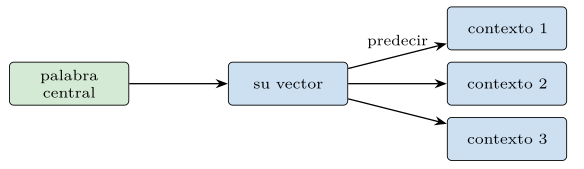
Entrenar sobre todo el vocabulario en cada paso sería carísimo, así que word2vec usa el muestreo negativo: por cada par (central, contexto) verdadero, toma unas pocas palabras al azar como ejemplos negativos, y ajusta los vectores para acercar el par verdadero y alejar los falsos (listado 12.1). Es un clasificador binario —¿esta palabra es contexto de aquella?— entrenado con muchos ejemplos baratos.
so = sigmoide(vc @ vo) # par verdadero: acercar
sn = sigmoide(vn @ vc) # negativos: alejar
# gradientes (descenso): mover vc hacia vo y lejos de los vn
gW = (so - 1) * vo + (sn[:, None] * vn).sum(0)
W[c] -= lr * gW
C[o] -= lr * (so - 1) * vc
C[neg] -= lr * (sn[:, None] * vc)Listado 12.1. El nucleo de skip-gram con muestreo negativo: acercar el par verdadero, alejar los negativos.
word2vec tiene dos variantes simétricas, y conviene distinguirlas. La skip-gram —la que usa la práctica— parte de la palabra central y predice el contexto; la CBOW (continuous bag of words) hace lo contrario, parte del contexto y predice la palabra central. Skip-gram aprende mejor las palabras raras y CBOW es más rápido; ambas comparten la idea de aprender por predicción (listado 12.2). La elección entre ellas es menor frente al cambio de paradigma que las dos encarnan: el embedding deja de calcularse y pasa a aprenderse.
# skip-gram: central -> {contexto} (mejor con palabras raras)
predecir(contexto, desde=central)
# CBOW: {contexto} -> central (mas rapido)
predecir(central, desde=contexto)Listado 12.2. Las dos caras de word2vec: skip-gram predice el contexto desde la central; CBOW, la central desde el contexto.
El fruto más célebre de word2vec, anticipado en el capítulo 11, es la aritmética del significado: las relaciones semánticas se vuelven direcciones constantes, y operar con vectores resuelve analogías (listado 12.3). Que esto emerja sin haberlo programado —solo de predecir contextos— fue la señal de que el aprendizaje capturaba estructura semántica real, no superficial.
objetivo = vec("rey") - vec("hombre") + vec("mujer")
vecino_mas_proximo(objetivo) # -> "reina"
# la direccion masculino->femenino es constante en el espacio aprendidoListado 12.3. La analogia como aritmetica de vectores, fruto de aprender por prediccion.
Que esto aprende de verdad se ve en la curva de entrenamiento (figura 12.2): la pérdida cae deprisa en las primeras épocas y se estabiliza, a medida que los vectores encuentran sus posiciones. Y que aprende bien se ve comparando su calidad con la del embedding aleatorio de partida y con el de co-ocurrencia del capítulo 11 (figura 12.3): el aleatorio apenas supera el azar, mientras que tanto el word2vec aprendido como el de co-ocurrencia agrupan perfectamente las palabras por tema. Aprender funciona; y sobre corpus grandes y variados, donde el conteo se queda corto, aprender gana con holgura.
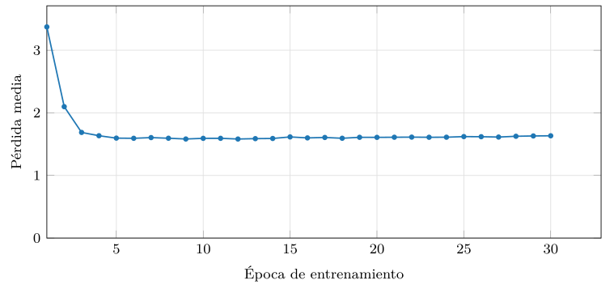
src/cap12_embeddings.py.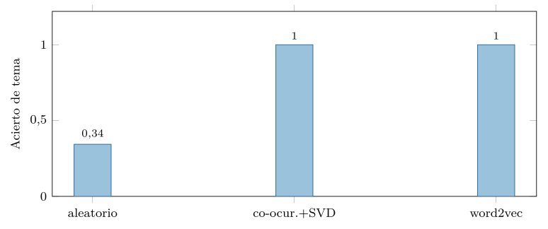
src/cap12_embeddings.py.El transformer y la atención
word2vec tiene un techo: da a cada palabra un vector, fijo, sea cual sea la frase. «Banco» tiene el mismo vector en «banco del parque» y en «banco central», un promedio de sus dos sentidos que no es ninguno. Superar ese techo exige que la representación de una palabra dependa de su contexto, y la pieza que lo logró —y que cambió el campo entero— es el transformer (Vaswani et al. 2017), cuyo corazón es el mecanismo de atención.
La idea de la atención es que cada palabra se reexprese en función de las demás de la frase (figura 12.4). Cada token emite una consulta (query) que se compara con las claves (key) de todos los tokens; las afinidades resultantes, normalizadas, ponderan los valores (value), y la salida de cada token es esa mezcla ponderada (listado 12.6). Una palabra «mira» a las que le importan —el verbo a su sujeto, el pronombre a su antecedente— y absorbe su información. La traza del listado 12.4 lo concreta para tres tokens: se calculan las afinidades de un token con todos, se normalizan a pesos que suman uno, y la salida es la mezcla de los valores según esos pesos —el token resultante es, literalmente, una combinación de sus vecinos.
token "persigue" frente a [el, gato, persigue]:
afinidades = [0.2, 0.9, 1.0] (mira sobre todo a "gato")
pesos = [0.18, 0.39, 0.43] (softmax, suman 1)
salida = 0.18*v(el) + 0.39*v(gato) + 0.43*v(persigue)
-> "persigue" se reexpresa incorporando a "gato" (su sujeto)Listado 12.4. Traza de la atencion para un token: afinidades, pesos normalizados y mezcla de valores.
Apilando muchas capas de atención, el transformer construye representaciones cada vez más ricas y sensibles al contexto.
El transformer real añade tres ingredientes sobre esa atención básica, que conviene nombrar. El primero es la atención multi-cabeza: en lugar de una sola atención, se calculan varias en paralelo —cada «cabeza» con sus propias proyecciones de Q, K y V—, de modo que una cabeza puede atender a la sintaxis, otra a la correferencia, otra al tema; sus salidas se concatenan (listado 12.5). El segundo es la codificación posicional: como la atención es indiferente al orden —trata la frase como un conjunto—, se suma a cada token una señal que codifica su posición, para que el modelo sepa qué va antes y qué después. El tercero es la profundidad: se apilan decenas de bloques de atención, cada uno refinando la representación del anterior.
def multi_cabeza(X, cabezas):
salidas = []
for (Wq, Wk, Wv) in cabezas: # cada cabeza, su proyeccion
salidas.append(atencion(X @ Wq, X @ Wk, X @ Wv))
return np.concatenate(salidas, axis=1) # se concatenanListado 12.5. Atencion multi-cabeza: varias atenciones en paralelo, cada una con sus proyecciones, concatenadas.
Esos tres ingredientes, más las conexiones residuales y la normalización que estabilizan el entrenamiento, forman el bloque transformer, la unidad que se repite. No es necesario dominar cada detalle para lo que importa al libro: que el transformer convierte una secuencia —de palabras o de parches— en una secuencia de vectores ricos en contexto, de los que se destila el embedding final.
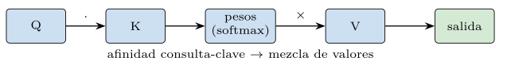
def atencion(Q, K, V):
d = K.shape[1]
pesos = softmax(Q @ K.T / np.sqrt(d)) # afinidad normalizada
return pesos @ V # mezcla de valoresListado 12.6. El mecanismo de atencion: afinidad consulta-clave, normalizar, y mezclar los valores.
Embeddings contextuales: BERT y Sentence-BERT
Apilando atención, BERT (Devlin et al. 2019) produce embeddings contextuales: a cada aparición de una palabra le da un vector distinto según la frase en que está (figura 12.5). «Banco» en «banco del parque» y en «banco central» recibe ahora dos vectores diferentes, que separan los sentidos —la polisemia que el capítulo 11 no podía resolver—. La práctica lo mide incluso con una atención de juguete (figura 12.6): la misma palabra «tabla», procesada en un contexto de tecnología y en uno de cocina, pasa de tener coseno \(1{,}0\) consigo misma —el embedding estático— a tener coseno casi nulo entre sus dos versiones contextuales, que apuntan en direcciones distintas. El contexto, por fin, moldea la representación.
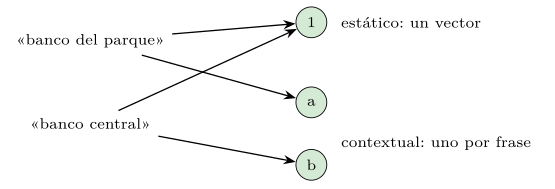
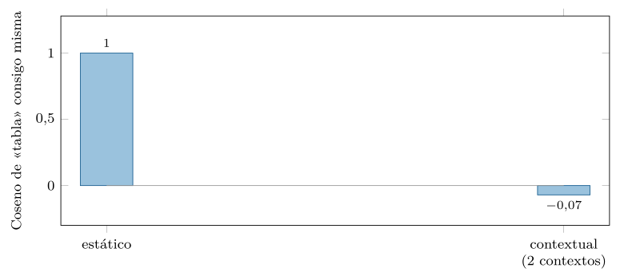
src/cap12_embeddings.py.¿Cómo se entrena BERT para que sus vectores sean tan ricos? Con un truco de supervisión gratuita: el modelado de lenguaje enmascarado (listado 12.7). Se toman textos enormes, se ocultan al azar algunas palabras, y se entrena al modelo para adivinarlas a partir del resto de la frase —en ambas direcciones, a izquierda y derecha—. Para acertar «el gato
ratones», el modelo ha de entender la frase entera, y al hacerlo aprende representaciones que capturan sintaxis y semántica. No hace falta etiquetar nada: el propio texto es su supervisión, lo que permite entrenar sobre toda la web.
texto: "el gato persigue a los ratones por el jardin"
enmascarado:"el gato [MASK] a los ratones por el [MASK]"
objetivo: predecir persigue ... jardin
# supervision gratuita: el propio texto es la respuestaListado 12.7. Preentrenamiento de BERT (enmascarado): ocultar palabras y entrenar a adivinarlas con todo el contexto.
Hay, sin embargo, un detalle crucial para las bases vectoriales. BERT da un vector por token, no por frase o documento, y para buscar por similitud hace falta un vector por texto. Producirlo bien no es trivial. Hay varias formas de combinar (pooling) los vectores de los tokens en uno solo (listado 12.8): tomar el del token especial CLS, o promediar todos, o quedarse con el máximo por dimensión. Pero ninguna, sobre un BERT sin ajustar, da un buen vector de frase: el modelo no fue entrenado para que esa combinación midiera similitud. Sentence-BERT (Reimers y Gurevych 2019) resolvió esto afinando el modelo con pares de frases —parecidas y distintas— de modo que el vector combinado de la frase quede cerca de las parecidas y lejos de las distintas.
cls = tokens[0] # el token especial CLS
medio = tokens.mean(axis=0) # promedio de todos los tokens
maximo = tokens.max(axis=0) # maximo por dimension
# sin afinar, ninguno da buen vector de frase: SBERT entrena para elloListado 12.8. Estrategias de pooling para obtener un vector de frase de los vectores de token de BERT.
Es el modelo que hizo práctica la búsqueda semántica de frases y documentos, y el tipo de codificador que alimenta una base vectorial de texto: entra una frase, sale un vector denso listo para indexar.
El pago de todo esto se ve en una comparación de frases (listado 12.9): un buen codificador de frases da coseno alto a dos paráfrasis —«¿cómo borro una tabla?» y «eliminar una tabla de la base de datos»— aunque compartan pocas palabras, y bajo a dos frases de temas distintos aunque compartan alguna. Es la discordancia de términos del capítulo 10 definitivamente superada: la similitud la decide el significado de la frase entera, no las palabras que coinciden.
a = codificador("¿cómo borro una tabla?")
b = codificador("eliminar una tabla de la base de datos") # parafrasis
c = codificador("receta de tarta de manzana")
coseno(a, b) # alto (~0.8): mismo significado, pocas palabras comunes
coseno(a, c) # bajo (~0.1): temas distintosListado 12.9. Similitud semantica de frases con un codificador: parafrasis cerca, temas distintos lejos, pese a las palabras compartidas.
Visión: ViT y embeddings de imagen
La misma maquinaria sirve para las imágenes, y ese fue un descubrimiento sorprendente. El vision transformer (ViT) (Dosovitskiy et al. 2021) trocea la imagen en parches cuadrados, trata cada parche como un «token» —como si fuera una palabra— y le aplica el mismo transformer (figura 12.7). El resultado es un vector denso que representa la imagen, en el que dos fotos del mismo objeto quedan cerca aunque difieran en iluminación o encuadre. Así, la búsqueda por similitud de imágenes —«fotos parecidas a esta»— se vuelve, otra vez, medir proximidad entre vectores, exactamente la misma operación que para el texto.
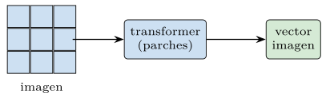
El detalle de cómo el ViT obtiene un único vector de imagen es instructivo (listado 12.10): cada parche se aplana y se proyecta a un vector —su «embedding de parche»—, se les suma una codificación posicional (qué parche va dónde), y se añade un token especial, el CLS, cuya representación final, tras pasar por el transformer, se toma como el vector de la imagen entera. Es el mismo patrón que en texto: un token resumen que recoge, vía atención, la información de toda la secuencia.
parches = trocear(imagen, 16) # p. ej. 16x16 pixeles
tokens = [proyectar(p) for p in parches] + posicion # embeddings
secuencia = [CLS] + tokens
salida = transformer(secuencia)
vector_imagen = salida[0] # la representacion del CLSListado 12.10. ViT en esquema: trocear, proyectar parches, anadir posicion y un token CLS que resume la imagen.
Esto consolida la idea unificadora del capítulo 11: cualquier objeto —texto, imagen, audio— se puede codificar como un vector denso, y entonces una misma base de datos vectorial sirve para todos. El codificador cambia con la modalidad —Sentence-BERT para texto, ViT para imagen—, pero la salida es la misma: un punto en un espacio donde cerca significa parecido. La tabla 12.1 resume el mapa de codificadores por modalidad, todos confluyendo en la misma salida.
| Modalidad | Codificador típico | Salida |
|---|---|---|
| Texto (frase) | Sentence-BERT, BGE-M3 | vector denso |
| Imagen | ViT, CLIP-imagen | vector denso |
| Texto e imagen | CLIP (espacio común) | vector denso compartido |
| Código, audio | modelos específicos | vector denso |
Modelos multimodales: texto e imagen en un mismo espacio
El paso siguiente es el más vistoso: poner distintas modalidades en el mismo espacio. Un modelo como CLIP (Radford et al. 2021) entrena a la vez un codificador de texto y uno de imagen, con un objetivo simple y poderoso: que la frase y la imagen que se corresponden caigan cerca en un espacio compartido, y las que no, lejos (figura 12.8). Tras entrenar con millones de pares imagen-descripción, el espacio queda alineado: el vector de la frase «un gato negro» queda junto al vector de una foto de un gato negro.
El objetivo que logra esa alineación es la pérdida contrastiva (listado 12.11): dado un lote de pares imagen-texto correctos, se entrena para que cada imagen quede más cerca de su texto que de los demás textos del lote, y viceversa. Cada par correcto «atrae» y todos los demás «repelen»; repetido sobre millones de pares, el espacio acaba ordenado por significado a través de las modalidades. Es la misma idea contrastiva —acercar lo afín, alejar lo ajeno— que Sentence-BERT usaba para frases, ahora cruzando texto e imagen.
sim = imagenes @ textos.T # similitud de cada par del lote
# el par correcto (la diagonal) debe ganar a los demas de su fila
objetivo = arange(len(lote)) # la pareja correcta de cada imagen
perdida = entropia_cruzada(sim, objetivo) # acerca diagonal, aleja restoListado 12.11. Perdida contrastiva: la imagen debe quedar mas cerca de su texto que de los demas del lote.
Otra consecuencia notable es la clasificación sin ejemplos (zero-shot): para clasificar una imagen entre categorías nuevas, basta escribir el nombre de cada categoría como frase, embeberla, y quedarse con la más próxima a la imagen —sin reentrenar nada—. La clasificación se vuelve, también, una búsqueda por proximidad, como muestra el listado 12.12: se embeben los nombres de las categorías como frases, se compara la imagen con cada una y se elige la más próxima —sin un solo ejemplo de entrenamiento de esas categorías.
clases = ["un perro", "un gato", "un coche", "un arbol"]
ve = vector_imagen(imagen)
vc = [codificador_texto(c) for c in clases]
clase = clases[argmax([coseno(ve, v) for v in vc])]
# sin entrenar en estas clases: clasificar = buscar la frase mas cercanaListado 12.12. Clasificacion zero-shot con un modelo multimodal: la clase es la frase mas proxima a la imagen.
El listado 12.13 muestra lo simple que resulta, una vez alineado el espacio, buscar imágenes con texto: se embebe la consulta de texto con el codificador de texto, se compara su vector con los de las imágenes —embebidas con el codificador de imagen— y se ordenan por coseno. Que un codificador procese texto y otro imágenes es indiferente para la comparación: ambos vectores viven en el mismo espacio.
q = codificador_texto("un atardecer en la playa")
ranking = sorted(imagenes,
key=lambda img: coseno(q, vector_imagen[img]),
reverse=True)
# texto e imagen en el mismo espacio: buscar es medir proximidadListado 12.13. Buscar imagenes con una frase: embeber la consulta de texto y ordenar las imagenes por coseno en el espacio compartido.
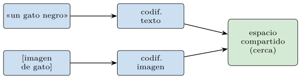
La consecuencia es deslumbrante por lo simple: se pueden buscar imágenes con una frase, o textos con una imagen, sin más que medir proximidad entre vectores de modalidades distintas. La búsqueda multimodal —«encuéntrame fotos de atardeceres en la playa»— no es un truco especial, sino la misma operación de siempre sobre un espacio donde texto e imagen conviven. Para la base vectorial, esto no cambia nada: sigue almacenando vectores y buscando los más próximos; la magia está en el codificador que alineó las modalidades, no en el índice.
Elegir un modelo: MTEB y Matryoshka
Llega aquí el matiz más importante para la práctica, y el que más sorprende a quien viene de la teoría: el practicante rara vez entrena su embedding. Entrenar un buen codificador exige datos y cómputo fuera del alcance de casi todos; lo que se hace es elegir uno preentrenado entre los muchos disponibles. Y para elegir se usa un banco de pruebas (figura 12.9): MTEB (Muennighoff et al. 2023) agrega decenas de tareas —recuperación, clasificación, agrupamiento— y publica una tabla que ordena los modelos por su rendimiento medio. Familias como BGE-M3, la de Voyage o las de los grandes proveedores compiten en ese ranking, y el practicante escoge según su puesto, su dimensión, su coste y su licencia. La decisión de embedding se ha vuelto, sobre todo, una decisión de selección. En los últimos años, la cabeza de ese ranking la ocupan codificadores derivados de grandes modelos de lenguaje, a menudo ajustados por instrucción: el mismo texto se embebe de forma distinta según una instrucción de tarea que se le antepone —«representa esta frase para recuperación»—, de modo que un solo modelo sirve a varias tareas (Wang et al. 2024). Ganan calidad a costa de más dimensión y más cómputo, lo que vuelve la truncación y la cuantización de más abajo no un lujo, sino una necesidad.
Entre usar un modelo tal cual y entrenar uno desde cero hay un término medio cada vez más común: el ajuste fino (fine-tuning). Se parte de un modelo preentrenado —que ya sabe de lenguaje o de imágenes— y se le dan unas pocas vueltas más con datos del dominio concreto —textos médicos, fichas de producto, jerga legal— para que su noción de «parecido» se alinee con la tarea. Es mucho más barato que entrenar de cero —se reaprovecha todo lo aprendido— y suele bastar con miles de ejemplos en lugar de millones. La tabla 12.2 sitúa las tres estrategias por coste y control.
| Estrategia | Coste | Cuándo |
|---|---|---|
| Preentrenado tal cual | mínimo | el dominio es general |
| Ajuste fino | medio | hay datos del dominio |
| Entrenar desde cero | enorme | casi nunca (grandes actores) |
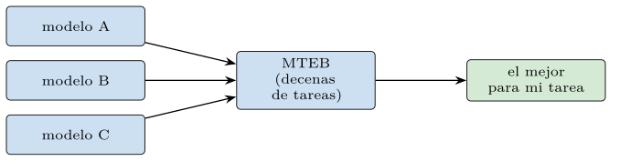
A esa elección se suma una flexibilidad reciente: los embeddings Matryoshka (Kusupati et al. 2022). Un modelo Matryoshka se entrena de modo que los primeros componentes del vector sean ya útiles por sí solos, anidados como una muñeca rusa (figura 12.10). Eso permite truncar la dimensión en el momento del despliegue —usar las primeras 256 de 1024, o las primeras 64— sacrificando algo de calidad por mucha velocidad y memoria, sin reentrenar nada. La práctica lo mide (figura 12.11): al truncar un embedding estándar, la calidad se desploma —sus primeros componentes no bastan—, mientras que el entrenado al estilo Matryoshka la mantiene casi intacta incluso con muy pocas dimensiones. Así, la decisión de tamaño del capítulo 11 —el compromiso entre calidad, memoria y velocidad— se traslada al despliegue, y se puede ajustar por consulta.
A la truncación de Matryoshka se suma otra palanca de coste que la cuarta parte explotará: la cuantización. Un embedding se guarda normalmente con números de coma flotante de 32 bits por componente, pero suele bastar con menos precisión —16 bits, 8 bits, o incluso 1 bit por componente (binarización)—, lo que reduce la memoria a la mitad, un cuarto o una treintaidosava parte a cambio de una pérdida de calidad a menudo pequeña (tabla 12.3). Matryoshka recorta cuántas dimensiones se guardan; la cuantización, cuántos bits ocupa cada una. Combinadas, pueden reducir el tamaño de un índice vectorial en uno o dos órdenes de magnitud, y son la razón de que servir miles de millones de vectores sea hoy viable.
| Palanca | Qué reduce | Efecto |
|---|---|---|
| Matryoshka | número de dimensiones | menos memoria y cómputo |
| Cuantización | bits por componente | menos memoria |
| Binarización | a 1 bit por componente | memoria mínima, más pérdida |
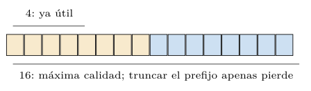
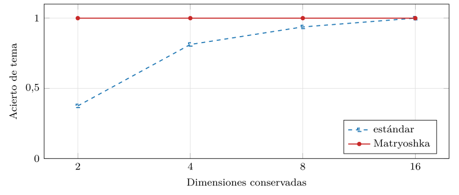
src/cap12_embeddings.py.Antes de elegir entre modelos hace falta saber medirlos, y la evaluación de codificadores —que MTEB sistematiza— se apoya en las medidas del capítulo 10 aplicadas a tareas concretas. Las dos familias del capítulo 11 reaparecen aquí con nombre propio. La evaluación intrínseca compara la geometría del embedding con juicios humanos: en la tarea de similitud textual semántica (STS), personas puntúan cuánto se parecen pares de frases, y se mide si el coseno del codificador correlaciona con esas puntuaciones (listado 12.14). La extrínseca mide el rendimiento en una tarea real —recuperación, clasificación, agrupamiento— con las métricas del capítulo 10: precisión, recall, MAP. MTEB agrega decenas de estas tareas en una sola tabla.
pares = [("un perro corre", "un can trota", 4.5),
("un perro corre", "llueve en abril", 0.2), ...]
cos = [coseno(cod(a), cod(b)) for a, b, _ in pares]
hum = [s for _, _, s in pares]
calidad = correlacion(cos, hum) # alto: el codificador ve similitudListado 12.14. Evaluacion intrinseca por STS: correlacion entre el coseno del codificador y la puntuacion humana de similitud.
Esta evaluación cierra el círculo con la recuperación clásica: las medidas que el capítulo 10 definió para juzgar un buscador booleano o de TF-IDF son las mismas que hoy juzgan un codificador neuronal. Cambió el modelo —de contar palabras a aprender vectores—, pero no la forma de saber si funciona: comparar lo recuperado con lo relevante, o la geometría con el juicio humano. La continuidad es deliberada y tranquilizadora: por mucho que avancen los codificadores, se siguen midiendo con las reglas de siempre.
Más allá del vector único: la interacción tardía
La última frontera, y un cambio de calado para las bases vectoriales, es que el vector único ha dejado de ser la única opción. Resumir un documento entero en un solo vector —por largo que sea— lo diluye: los matices de un texto de mil palabras no caben en trescientos números, y una consulta que coincide con un párrafo se pierde en el promedio del resto. La representación multivector de la interacción tardía —ColBERT (Khattab y Zaharia 2020) y sus herederos para texto e imagen— guarda un vector por token en lugar de uno por documento, y compara consulta y documento por el mejor emparejamiento de sus tokens: el operador MaxSim (figura 12.12, listado 12.15).
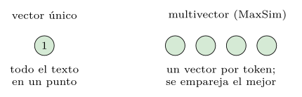
def maxsim(consulta, doc): # listas de vectores (un vector por token)
sim = [[coseno(q, d) for d in doc] for q in consulta]
return np.mean([max(fila) for fila in sim]) # cada q, su mejor dListado 12.15. MaxSim: cada token de la consulta busca su mejor pareja en el documento; se promedian esos maximos.
La ventaja se mide con claridad (figura 12.13). Se toma un documento que contiene los términos de una consulta y se le añade cantidad creciente de contenido ajeno; el vector único promediado se diluye —su similitud con la consulta se desploma a medida que el ruido domina el promedio—, mientras que MaxSim se mantiene alto, porque los tokens de la consulta siguen encontrando su pareja exacta entre los tokens del documento, sin importar cuánto ruido haya alrededor. Es la robustez a la longitud y a la dilución que hace de la interacción tardía la opción de moda para la recuperación de precisión, a costa de almacenar muchos más vectores —un coste que la cuarta parte tendrá que afrontar.
El precio en almacenamiento no es menor, y conviene cuantificarlo. Un documento de quinientos tokens, que con un vector único ocupa un solo vector, con la representación multivector ocupa quinientos: tres órdenes de magnitud más espacio en el índice. Por eso la interacción tardía se reserva para cuando la precisión justifica el coste, y se combina con compresión agresiva de los vectores por token. La tabla 12.4 contrapone las tres representaciones del recorrido —estática, contextual de vector único, y multivector— en lo que cada una captura y cuesta.
| Representación | Captura | Coste por documento |
|---|---|---|
| Estática (word2vec) | sin contexto ni orden | un vector (por palabra) |
| Contextual, vector único | contexto, un punto | un vector |
| Multivector (ColBERT) | contexto, por token | un vector por token |
La extensión natural de esta idea a los documentos visuales —ColPali (Faysse et al. 2024) y sus parientes— aplica la misma interacción tardía sobre los parches de una página escaneada, de modo que una consulta de texto encuentra la región de la imagen que la responde, sin pasar por un reconocimiento de caracteres. Es la frontera actual: multivector y multimodal a la vez.
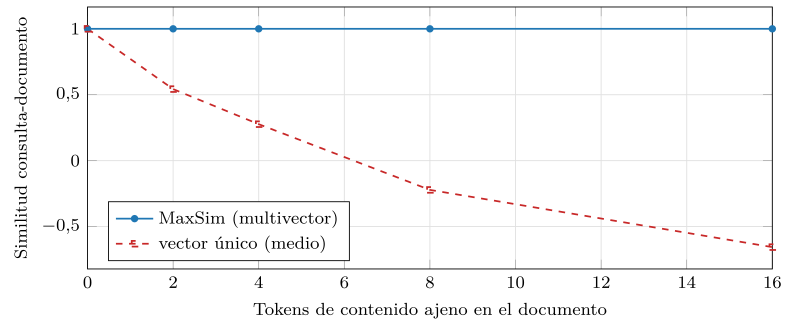
src/cap12_embeddings.py.Práctica: los mecanismos, desde cero
Todas las gráficas anteriores salen de un mismo módulo, src/cap12_embeddings.py, que implementa los mecanismos desde cero en numpy y sobre la CPU —sin modelos preentrenados ni GPU—, porque el objetivo es entender, no reproducir un modelo industrial. El módulo entrena un word2vec real, aplica la atención, entrena una variante Matryoshka y compara la interacción tardía con el vector único, todo con una semilla fija y en segundos.
Una decisión de implementación merece comentario, porque ilustra un escollo real del aprendizaje automático. La primera versión del entrenamiento divergía —la pérdida subía en lugar de bajar— por dos motivos sutiles: un paso de aprendizaje demasiado grande y, sobre todo, el cálculo de los gradientes sobre vistas de los vectores que se modificaban a mitad del cálculo, corrompiéndolo. La cura fue calcular los gradientes sobre copias y aplicarlos al final de cada paso, además de bajar el ritmo de aprendizaje. Es un recordatorio de que el deep learning, por debajo de los modelos deslumbrantes, es aritmética delicada: un signo, un alias o un paso mal puesto, y la red no aprende. Implementarlo desde cero —y verlo fallar y arreglarse— enseña eso que ningún modelo preentrenado muestra.
Observación. Conviene ser explícito sobre los recursos, fiel a la convención del libro. Los modelos de los que habla este capítulo —Sentence-BERT, ViT, CLIP, BGE-M3— son grandes, se descargan de repositorios y se ejecutan con aceleración en GPU; usarlos de verdad requiere el entorno con sus dependencias y, en la práctica, una tarjeta gráfica. El módulo de este capítulo no los usa: se queda en los mecanismos, implementados en numpy, que corren en cualquier portátil. Es una decisión deliberada —las ideas duran y se reproducen; los modelos concretos cambian y cuestan—, y separa lo que el lector debe entender (aquí) de lo que, llegado el caso, ejecutará con un modelo preentrenado.
Las cinco medidas salen de un mismo programa (listado 12.16), que genera el corpus, entrena una vez el word2vec estándar y una vez la variante Matryoshka, y reutiliza esos modelos en todas las medidas —entrenar es lo caro, así que se hace una sola vez—. Una semilla fija lo gobierna todo.
def main():
corpus = generar_corpus()
vocab = vocabulario(corpus)
W, hist = entrenar_word2vec(corpus, vocab) # estandar
matr, _ = entrenar_word2vec(corpus, vocab,
prefijos=[2, 4, 8, 16]) # Matryoshka
simular_entrenamiento(hist) # curva de aprendizaje
simular_comparacion(corpus, vocab, W) # aleatorio/SVD/word2vec
simular_contexto(vocab, W) # atencion: estatico vs contextual
simular_matryoshka(vocab, W, matr)
simular_maxsim(vocab, W) # interaccion tardia
demostracion(vocab, W, 15)Listado 12.16. El motor del experimento: entrenar una vez y reutilizar en las cinco medidas.
El corpus de entrenamiento es sintético y con estructura temática, para que la señal sea limpia y el aprendizaje, nítido (listado 12.17): cada frase es un puñado de palabras del mismo tema, de modo que las palabras de un tema coaparecen una y otra vez. Es deliberadamente simple —un modelo real aprende de la web entera—, pero basta para que word2vec descubra los temas, que es lo que se quiere demostrar.
TEMAS = {
"tecnologia": ["base","datos","consulta","tabla","indice", ...],
"cocina": ["receta","harina","azucar","salsa","horno", ...],
"deporte": ["partido","equipo","balon","gol","carrera", ...],
"musica": ["guitarra","piano","cancion","ritmo","melodia", ...],
}
def generar_corpus(por_tema=80):
corpus = []
for palabras in TEMAS.values():
for _ in range(por_tema):
k = randint(4, 6)
corpus.append(sample(palabras, k)) # frase intratema
return corpusListado 12.17. El corpus sintetico con estructura tematica para entrenar el word2vec de juguete.
El word2vec de la práctica es un skip-gram con muestreo negativo entrenado por descenso de gradiente; el listado 12.18 muestra el bucle, que recorre los pares (central, contexto) del corpus, muestrea negativos y actualiza los vectores. Es deep learning en su forma más desnuda —una red de una capa— pero captura la idea entera: aprender una representación ajustando parámetros contra un objetivo.
for ep in range(epocas):
rng.shuffle(pares)
for c, o in pares: # (central, contexto)
neg = rng.choice(v, size=negativos, p=p_neg) # negativos
vc, vo, vn = W[c].copy(), C[o].copy(), C[neg].copy()
so, sn = sigmoide(vc @ vo), sigmoide(vn @ vc)
W[c] -= lr * ((so-1)*vo + (sn[:,None]*vn).sum(0))
C[o] -= lr * (so-1) * vc
C[neg] -= lr * (sn[:,None] * vc)Listado 12.18. El bucle de entrenamiento de word2vec: por cada par, muestrear negativos y actualizar los vectores.
Los núcleos de las otras medidas son igual de compactos (listado 12.19). El de contexto aplica la atención a una palabra rodeada de dos contextos distintos y compara sus salidas; el de Matryoshka entrena con una pérdida que suma la de varios prefijos, para que los primeros componentes basten; el de interacción tardía empareja tokens con MaxSim. Cada uno aísla un mecanismo en unas líneas.
# contexto: la misma palabra en dos contextos -> dos vectores
v_tec = atencion(sec_tec, sec_tec, sec_tec)[0]
v_coc = atencion(sec_coc, sec_coc, sec_coc)[0] # coseno(v_tec,v_coc) << 1
# Matryoshka: la perdida suma la de cada prefijo m
for m in [2, 4, 8, 16]:
perdida += skipgram(vc[:m], vo[:m], vn[:, :m])
# interaccion tardia: cada token de la consulta, su mejor pareja
maxsim = np.mean([max(coseno(q, d) for d in doc) for q in consulta])Listado 12.19. Nucleos de las medidas: contexto (atencion), Matryoshka (perdida por prefijos) e interaccion tardia (MaxSim).
Conviene leer las cifras con detalle, porque cada una cierra un argumento del capítulo. El aprendizaje: la pérdida cae de \(3{,}37\) a \(1{,}59\) y el acierto de tema llega a \(1{,}0\) —el embedding emerge del entrenamiento—. El contexto: «tabla» pasa de coseno \(1{,}0\) consigo misma (estática) a \(-0{,}07\) entre sus dos versiones contextuales —la atención la reorienta según el vecindario—. La Matryoshka: al truncar a dos dimensiones, el estándar cae a \(0{,}38\) y el Matryoshka se mantiene en \(1{,}0\) —los primeros componentes bastan porque se entrenaron para ello—. Y la interacción tardía: con dieciséis tokens de relleno ajeno, el vector único cae a \(-0{,}66\) y MaxSim se mantiene en \(1{,}0\) —empareja tokens, no promedia—. Cuatro cifras, cuatro tesis confirmadas.
Las cinco medidas, reunidas (listado 12.20), resumen el capítulo: el aprendizaje converge y acierta, el contexto cambia la palabra de coseno \(1\) a casi cero, Matryoshka tolera el truncado donde el estándar se hunde, y MaxSim aguanta la dilución que tumba al vector único.
entrenamiento: perdida 3.37 -> 1.59 acierto 0.97 -> 1.00
comparacion: aleatorio 0.34 co-ocur. 1.00 word2vec 1.00
contexto: estatico 1.00 contextual (2 ctx) -0.07
matryoshka(d=2): estandar 0.38 matryoshka 1.00
maxsim (relleno 16): maxsim 1.00 vector unico -0.66Listado 12.20. Salida medida del modulo: las cinco propiedades en cifras.
Para que se vea que no hay caja negra, el listado 12.21 reproduce la función de entrenamiento entera —inicialización, muestreo de negativos, gradientes sobre copias y registro de la calidad por época—. Son unas veinte líneas de numpy, sin marco de aprendizaje profundo ni GPU, y contienen todo lo que hace falta para que un embedding emerja del texto. Que el deep learning real use miles de millones de parámetros y aceleradores no cambia la estructura: es este bucle, a otra escala.
def entrenar_word2vec(corpus, vocab, dim=16, ventana=2,
negativos=5, epocas=30, lr=0.02):
rng = np.random.default_rng(SEMILLA)
W = rng.standard_normal((len(vocab), dim)) * 0.1 # entrada
C = rng.standard_normal((len(vocab), dim)) * 0.1 # salida
p_neg = frecuencias(corpus, vocab) ** 0.75 # muestreo
p_neg /= p_neg.sum()
pares = generar_pares(corpus, ventana) # (central, ctx)
hist = []
for ep in range(epocas):
rng.shuffle(pares)
for c, o in pares:
neg = rng.choice(len(vocab), negativos, p=p_neg)
vc, vo, vn = W[c].copy(), C[o].copy(), C[neg].copy()
so, sn = sigmoide(vc @ vo), sigmoide(vn @ vc)
W[c] -= lr * ((so-1)*vo + (sn[:,None]*vn).sum(0))
C[o] -= lr * (so-1) * vc
C[neg] -= lr * (sn[:,None] * vc)
hist.append(acierto_de_tema(W, vocab)) # calidad
return W, histListado 12.21. La funcion de entrenamiento completa de word2vec, en numpy: inicializar, muestrear negativos, gradiente sobre copias, registrar calidad.
Fiel a la convención, el módulo muestra quince palabras al azar y su vecino más próximo en el espacio aprendido por word2vec (listado 12.22). Como en el capítulo 11, las quince tienen su vecino en el mismo tema —«cancion» llama a «nota», «atleta» a «equipo», «servidor» a «codigo»—, pero ahora esa estructura no se ha contado, se ha aprendido: emergió del ajuste de los vectores contra el objetivo de predecir el contexto.
palabra vecino coseno mismo tema?
---------- ---------- ------ -----------
cancion nota 0.985 si
atleta equipo 0.988 si
servidor codigo 0.981 si
azucar postre 0.984 si
... ... ... si (15 de 15)Listado 12.22. Quince palabras y su vecino mas proximo en el espacio word2vec aprendido (las quince, del mismo tema).
Las medidas confirman las ideas —el aprendizaje converge, el contexto moldea, Matryoshka tolera el truncado, la interacción tardía resiste la dilución— pero conviene la honestidad de costumbre sobre su alcance. El word2vec de la práctica entrena sobre un corpus sintético y diminuto, donde los temas están deliberadamente separados; un modelo real aprende de miles de millones de palabras, captura relaciones que este no, y se mide en tareas que este no toca. La atención implementada es la identidad —sin las proyecciones aprendidas de Q, K y V que dan al transformer su poder—, así que su efecto contextual es una sombra del real. Y los modelos punteros —contextuales, multimodales, multivector— no se han ejecutado aquí, solo sus mecanismos. Lo que la práctica demuestra no es que estos modelos de juguete sean buenos, sino que las ideas —aprender por predicción, atender al contexto, anidar dimensiones, emparejar tokens— son comprensibles y comprobables sin un centro de datos. Esa comprensión es la que permite elegir y usar con criterio los modelos reales, y la que sobrevive a su vertiginoso relevo.
Conviene además una advertencia metodológica sobre los resultados, todos perfectos o casi en el corpus de juguete: que word2vec acierte el 100 % de los temas, o que Matryoshka mantenga la calidad intacta al truncar, no debe leerse como «estos métodos son perfectos», sino como «el corpus es fácil». Los temas están deliberadamente separados, sin solapamiento ni ruido, de modo que cualquier método razonable los distingue. En datos reales —temas que se entremezclan, polisemia, frases ambiguas— los mismos métodos obtienen cifras mucho más modestas, y las diferencias entre ellos, que aquí se aplanan en el techo del 100 %, se vuelven decisivas. El valor de la práctica no está en las cifras absolutas —infladas por la facilidad— sino en las formas: que la pérdida baja, que el contexto separa, que truncar degrada el estándar y no el Matryoshka, que la dilución hunde el vector único y no el multivector. Esas formas son reales; las cifras, optimistas.
Del codificador a la base vectorial
Conviene anticipar, antes de cerrar, cómo encaja todo lo de este capítulo en el flujo de trabajo que la cuarta parte desarrollará, porque ese encaje es la razón de ser del libro. El codificador —el modelo de embedding elegido— se usa en dos momentos (listado 12.23). Al indexar: se pasa cada documento por el codificador, se obtiene su vector, y se guarda en la base vectorial junto a un identificador. Al consultar: se pasa la consulta por el mismo codificador, se obtiene su vector, y se le pide a la base los documentos cuyos vectores estén más próximos. El codificador aparece en los dos lados, y ha de ser el mismo —o uno alineado— para que consulta y documentos vivan en el mismo espacio.
# indexar: cada documento -> vector -> a la base
for doc in documentos:
base.insertar(id(doc), codificador(doc))
# consultar: la consulta por el MISMO codificador, y buscar vecinos
q = codificador("¿cómo normalizar una base de datos?")
resultados = base.vecinos_mas_proximos(q, k=10)Listado 12.23. El flujo de uso del codificador: indexar documentos y luego consultar, ambos por el mismo modelo de embedding.
El listado 12.24 muestra el flujo entero en acción, en su versión más simple —sin índice, comparando contra todos—: se codifican los documentos una vez, y cada consulta se codifica y se compara con todos para devolver los más próximos. Es un buscador semántico completo en seis líneas; lo único que le falta para escalar a millones de documentos es no comparar contra todos, que es precisamente lo que la cuarta parte resuelve.
vectores = [codificador(d) for d in documentos] # indexar una vez
def buscar(consulta, k=5):
q = codificador(consulta)
sims = [(d, coseno(q, v)) for d, v in zip(documentos, vectores)]
return sorted(sims, key=lambda x: -x[1])[:k] # los k mas proximos
# falta solo: no comparar contra TODOS -> indices del cap. 14Listado 12.24. Un buscador semantico completo (fuerza bruta): codificar documentos y consulta, y ordenar por coseno.
En ese flujo, este capítulo ha provisto el codificador; la cuarta parte proveerá la base —el insertar y el vecinos_mas_proximos que, a escala de millones de vectores, son todo menos triviales—. La interfaz entre ambos es, una vez más, mínima: un vector entra, vectores próximos salen. Toda la sofisticación de este capítulo —transformers, atención, multimodalidad— se condensa, para la base de datos, en esa función codificador que convierte cualquier cosa en un punto del espacio. Y toda la sofisticación de la cuarta parte se condensará en encontrar los puntos próximos deprisa. Dos mundos, una interfaz.
Lo que los embeddings no saben
Antes de cerrar, conviene una dosis de escepticismo, porque el entusiasmo por los embeddings tiende a ocultar sus límites, y conocerlos es parte de usarlos bien. El primero es que un embedding hereda los sesgos de los datos con que se entrenó: si el texto de entrenamiento asocia ciertas profesiones a un género, el embedding lo reflejará en su geometría, y una búsqueda o una recomendación construida sobre él los propagará. La aritmética del significado, tan celebrada, tiene su cara oscura: las direcciones que codifica incluyen las de los prejuicios del corpus.
El segundo es la brecha de dominio: un codificador entrenado con texto general puede medir mal la similitud en un dominio especializado —términos médicos, jurídicos, técnicos— donde «parecido» significa algo distinto de lo que el modelo aprendió. El tercero, más sutil, es que el embedding mide similitud, no verdad ni relevancia lógica: dos frases pueden ser muy parecidas en el espacio y decir cosas opuestas —«el tratamiento funciona» y «el tratamiento no funciona» comparten casi todo salvo la negación, que el embedding a veces pasa por alto—. Y el cuarto es que un embedding no razona: encuentra lo parecido, pero no deduce, no encadena, no verifica. Por eso, en la quinta parte, la recuperación por embeddings se combinará con modelos generativos que sí razonan sobre lo recuperado —el patrón RAG—, precisamente para suplir lo que el vector solo no puede.
Observación. Estos límites no invalidan los embeddings; delimitan su lugar. Un embedding es un excelente medidor de parecido aprendido, y nada más: ni un oráculo de verdad, ni un razonador, ni un sistema neutral. Tratarlo como lo que es —una herramienta de similitud, con los sesgos de sus datos y la miopía de su dominio— es lo que separa un sistema robusto de uno que falla en silencio. La cuarta parte construirá la infraestructura para buscar embeddings deprisa; usarla con criterio exige recordar, siempre, qué mide el vector y qué no.
Síntesis y puente al capítulo siguiente
Este capítulo ha mostrado cómo el aprendizaje profundo construye los vectores que las bases vectoriales indexan. word2vec aprende el embedding prediciendo el contexto, consagrando la hipótesis distribucional como un problema de optimización. El transformer y su atención permiten que la representación de una palabra dependa de su contexto, dando los embeddings contextuales de BERT y, con el ajuste de Sentence-BERT, un vector por frase listo para buscar. La misma maquinaria codifica imágenes con el ViT y, en los modelos multimodales, pone texto e imagen en un mismo espacio donde buscar una modalidad con otra es, otra vez, medir proximidad. Y el uso actual añade dos giros: que se elige un modelo preentrenado por su puesto en MTEB y se trunca con Matryoshka, y que el vector único cede terreno al multivector de la interacción tardía.
El lector se lleva la pieza que faltaba para cerrar la idea de la similitud: el codificador. El capítulo 10 dio la comparación por proximidad; el 11, la representación densa; este, el motor neuronal que la produce con calidad. Juntos, completan el porqué de las bases de datos vectoriales: hay codificadores que convierten cualquier cosa en un buen vector, y buscar es medir cercanía entre vectores. Pero queda una pregunta que todo el recorrido ha dado por sentada: ¿qué es, exactamente, «cerca»? Se ha hablado de coseno, pero hay otras distancias, y la geometría de estos espacios de alta dimensión —donde viven los embeddings— tiene rarezas que afectan a cómo se mide y se busca. El capítulo 13 aborda esa geometría —las métricas, la normalización, las propiedades del espacio— para dejar todo afinado antes de que la cuarta parte se ocupe de almacenar e indexar estos vectores a gran escala. El motor ya produce los vectores; falta entender el espacio en que viven.
Antes de pasar a esa geometría, vale la pena recapitular el arco completo de la tercera parte, porque este capítulo lo cierra. El capítulo 10 recuperó la idea de Salton —buscar es medir proximidad— y mostró su límite: el vector disperso y literal no captura el significado. El capítulo 11 dio la representación densa que sí lo captura, y explicó por qué la baja dimensión es necesaria. Este capítulo ha dado el codificador neuronal que produce esos vectores densos con calidad, de word2vec a los modelos multimodales, y ha mostrado el uso real —elegir, no entrenar; truncar y cuantizar; multivector cuando hace falta precisión—. Las tres piezas, juntas, responden la pregunta que abrió la parte: cómo pasar del «igual a» al «cercano a». La respuesta es un codificador que coloca cada cosa en un espacio donde la cercanía es parecido, y una forma de medir esa cercanía. Lo que queda —el capítulo 13 y la cuarta parte— es puro oficio sobre esa base: afinar la métrica y construir la infraestructura. La idea central ya está completa, y es la misma que tenía Salton hace medio siglo, ahora dotada del motor que la hace funcionar de verdad.
Conviene cerrar subrayando el cambio histórico que este capítulo documenta, porque explica por qué las bases de datos vectoriales son un fenómeno reciente y no de los años setenta. La idea de buscar por proximidad es vieja —Salton, 1975, capítulo 10—, y la de la representación densa también —LSA, años noventa, capítulo 11—. Lo que faltaba era un codificador capaz de producir vectores lo bastante buenos como para que la búsqueda por similitud fuera útil de verdad, sobre cualquier dato y a la calidad que las aplicaciones exigen. Ese codificador llegó con el aprendizaje profundo: word2vec lo insinuó, el transformer lo hizo potente, los modelos contextuales y multimodales lo extendieron a todo. Solo cuando hubo codificadores así —del último lustro— tuvo sentido construir infraestructura especializada para almacenar y buscar sus vectores a escala. La base de datos vectorial es, por eso, hija del codificador neuronal: nace cuando hay vectores que merece la pena indexar.
Y hay una asimetría de responsabilidades que conviene fijar antes de la cuarta parte. El codificador —lo de este capítulo— decide qué significa cerca: qué captura el vector, qué considera parecido, con qué calidad. La base vectorial —lo de la cuarta parte— decide cómo encontrar lo cercano deprisa: cómo almacenar millones de vectores e indexar para no compararlos todos. Son dos problemas distintos, resueltos por comunidades distintas, y unidos por una interfaz mínima: un vector. El practicante elige el codificador (por MTEB) y configura la base (por escala y latencia), y rara vez toca las tripas de ninguno. Entender la frontera entre ambos —qué aporta cada lado— es lo que permite diagnosticar cuándo una búsqueda falla por mal codificador (el vector no captura lo que debía) o por mal índice (el vector es bueno pero no se encuentra), y es la distinción con la que conviene entrar en la cuarta parte.
Conviene, por último, una palabra sobre la velocidad de cambio de este capítulo, porque es la más rápida del libro y la más fácil de malinterpretar. Los modelos concretos que aquí se nombran —tal versión de BERT, tal familia de embeddings, tal puesto en MTEB— estarán superados cuando el lector los busque: el campo se reescribe cada pocos meses. Sería un error, por eso, aprender este capítulo como un catálogo de productos. Lo que no cambia —y es lo que se ha intentado destilar— son los mecanismos: aprender una representación por predicción, atender al contexto para desambiguar, alinear modalidades por contraste, anidar dimensiones para truncarlas, emparejar tokens para no diluir. Esos mecanismos llevan años siendo los mismos bajo nombres cambiantes, y seguirán explicando el modelo que venga. Quien los entiende lee el anuncio del próximo embedding y sabe, sin instalarlo, qué hace distinto y si le conviene; quien solo memorizó nombres, vuelve a empezar con cada relevo.
Esa es, en el fondo, la apuesta de toda la tercera parte. La similitud no es una moda nacida con los grandes modelos: es la idea de Salton de 1975 (capítulo 10), dotada de una representación densa (capítulo 11) y de un codificador neuronal que la hace excelente (este capítulo). Cada pieza es comprensible, comprobable y duradera, y juntas explican por qué hoy se busca por significado y no solo por coincidencia. Con el codificador entendido —qué produce y por qué—, el libro está listo para su última pregunta sobre el espacio de los vectores: qué es exactamente la cercanía que tanto se ha invocado. Esa es la geometría del capítulo 13, el último escalón antes de que la cuarta parte construya, por fin, la base de datos vectorial.
Ejercicios propuestos
Lecturas recomendadas
Mikolov et al. (2013): word2vec, el embedding aprendido por predicción del contexto y la aritmética del significado; el primer hito de este capítulo y la prueba de que el significado se puede aprender, no solo contar.
Vaswani et al. (2017): «Attention is all you need», el transformer y el mecanismo de atención; la arquitectura que sostiene todos los embeddings contextuales modernos y, con ella, la práctica totalidad de la IA del lenguaje actual.
Devlin et al. (2019): BERT, los embeddings contextuales profundos por enmascarado bidireccional; y Reimers y Gurevych (2019), Sentence-BERT, que con ajuste contrastivo los convierte en un vector por frase listo para buscar —el codificador típico de una base vectorial de texto.
Dosovitskiy et al. (2021): el vision transformer, que trata la imagen como una secuencia de parches y lleva la misma maquinaria a la visión; y Radford et al. (2021), CLIP, que alinea texto e imagen en un mismo espacio y habilita la búsqueda multimodal y la clasificación sin ejemplos.
Khattab y Zaharia (2020): ColBERT y la interacción tardía, la representación multivector que resiste la dilución del vector único; la frontera actual de la recuperación de precisión, a costa de almacenar un vector por token.
Muennighoff et al. (2023): MTEB, el banco de pruebas con que se eligen los modelos; y Kusupati et al. (2022), los embeddings Matryoshka de dimensión truncable.
Harris (1954): conviene releer, desde aquí, la hipótesis distribucional del capítulo 11; word2vec, BERT y todo lo demás no son sino su realización con cada vez más maquinaria.
Turney y Pantel (2010): una panorámica de los modelos vectoriales del significado que, leída tras este capítulo, traza el hilo completo desde la co-ocurrencia hasta los embeddings aprendidos, y ayuda a ver la unidad bajo la sucesión de modelos.